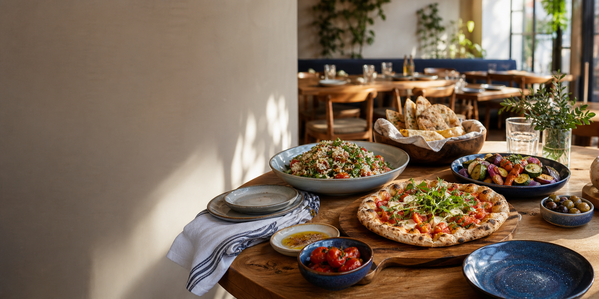

Pizza
Mediterranean Special
Loaded, savory, and built for the middle of the table.
Downtown Your Downtown
A warm Main Street restaurant known for pizza, calzones, pasta, gyros, salads, desserts, and the kind of dinner that turns into a habit.
Family-Owned Downtown Favorite
Settle into Italian comfort food, Mediterranean favorites, fresh desserts, and a Main Street dining room that feels easy to come back to. Call ahead for pickup or gather around the table for dinner downtown.
Specials and Music
Visit
Tuesday through Friday 11 AM-9 PM. Saturday 5 PM-9 PM. Closed Sunday and Monday.
Near local shops, hotels, and evening foot traffic.